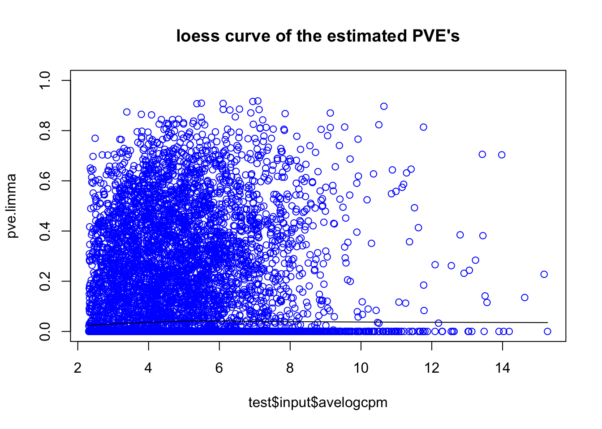

Last updated: 2016-04-28
Code version: 9f3adeea9d03e68822819a11783a8ee24a9046a8
Define functions to generate pure null RNA-Seq datasets (we use GTEx data).
library(edgeR)Loading required package: limmalibrary(limma)
library(qvalue)Warning: replacing previous import by 'grid::arrow' when loading 'qvalue'Warning: replacing previous import by 'grid::unit' when loading 'qvalue'source("../code/fash.R")Loading required package: stats4Loading required package: evd
Attaching package: 'evd'The following object is masked from 'package:ashr':
densdatamaker = function(args){
rawdata = read.table("/Volumes/PERSONAL/MS/gtex/tissues/Muscle-Skeletal.txt",header=TRUE)
# randomly choose samples for each gene
counts = selectsample(rawdata, args$nsamp*args$ngroup, args$breaksample)
rm("rawdata")
# Remove genes without any reads
counts = counts[apply(counts,1,sum)>0,]
# Take the top Ngene high-expressed genes
counts = counts[sort(order(rowSums(counts),decreasing=TRUE)[1:args$ngene]),]
condition = factor(rep(1:args$ngroup,each=args$nsamp))
# Voom transformation + limma
voomlim = voom_transform(counts, condition)
# f-test
ftest = varcomp_voom(voomlim$v, condition)
# meta data
meta = list(args=args)
# input data
input = list(counts=counts, condition=condition,
v=voomlim$v, avelogcpm=voomlim$avelogcpm,
fstats.limma=voomlim$fstats, pve.limma=voomlim$pve, pvalue.limma=voomlim$pvalue,
df1.limma=args$ngroup-1, df2.limma=voomlim$lim$df.total[1],
fstats.ftest=ftest$fstats, pve.ftest=ftest$pve)
data = list(meta=meta,input=input)
return(data)
}
# Voom transformation
voom_transform = function(counts, condition, W=NULL){
dgecounts = calcNormFactors(DGEList(counts=counts,group=condition))
if (is.null(W)){
design = model.matrix(~condition)
}else{
design = model.matrix(~condition+W)
}
v = voom(dgecounts,design,plot=FALSE)
lim = lmFit(v)
lim = eBayes(lim[,-1])
pve = pve_ftest(length(condition)/length(unique(condition)),
lim$s2.post*lim$F, lim$s2.post)
dgecounts = estimateDisp(dgecounts, design, robust=TRUE)
avelogcpm = dgecounts$AveLogCPM
return(list(v=v, lim=lim, avelogcpm=avelogcpm,
fstats=lim$F, pvalue=lim$F.p.value, pve=pve))
}
varcomp_voom = function(v, condition){
combo = cbind(v$E,v$weights)
tmp = apply(combo,1,voom_ftest,condition=condition)
MST=tmp[2,]
MSE=tmp[3,]
pve = pve_ftest(length(condition)/length(unique(condition)), MST, MSE)
return(list(fstats=tmp[1,], MST=MST, MSE=MSE, pve=pve))
}
voom_ftest = function(ynweights,condition){
y = ynweights[1:(length(ynweights)/2)]
weights = ynweights[(length(ynweights)/2+1):length(ynweights)]
fit = lm(y~condition, weights=weights)
MST = anova(fit)$M[1]
MSE = anova(fit)$M[length(anova(fit)$M)]
fstat = anova(fit)$F[1]
return(c(fstat,MST,MSE))
}
# randomly subsample data for each gene
# gene: a vector of reads for one gene
# nsamp: # of samples wanted
sampleingene = function(gene, nsamp){
sample = sample(length(gene),nsamp)
return(c(gene[sample]))
}
# Randomly select samples
# counts: full count matrix
# nsamp: # of samples wanted
# breaksample: flag, if select different samples for each gene
selectsample = function(counts, nsamp, breaksample){
if (breaksample==FALSE){
subsample = sample(1:dim(counts)[2],nsamp)
counts = counts[,subsample]
}else{
counts = t(apply(counts, 1, sampleingene, nsamp=nsamp))
}
return(counts)
}
pve_ftest = function(nsamp,MST,MSE){
sigma.c2.hat = pmax(0,(MST-MSE)/nsamp)
sigma.e2.hat = MSE
return(sigma.c2.hat/(sigma.c2.hat+sigma.e2.hat))
}
pve_plugin = function(nsamp,fashobj){
(exp(fashobj$PosteriorMean.logf)-1)/(exp(fashobj$PosteriorMean.logf)-1+nsamp)
}Sample a pure null dataset (independent genes): for each gene, randomly choose 250 samples from same condition (tissue). Separate them into 5 groups with 50 samples each group.
set.seed(1234)
# Generate a pure null dataset
args = list(ngene=10000, ngroup=5, nsamp=50, breaksample=TRUE)
test = datamaker(args)
# fash
test.fash = fash(test$input$fstats.limma, test$input$df1.limma, test$input$df2.limma, oneside=TRUE)
pve.fash = pve_plugin(args$nsamp, test.fash)
# p-values of voom+limma's moderated F-test
hist(test$input$pvalue,30, xlab="voom+limma p-value", main="Histogram of p-value")# Number of genes called significant
sum(qvalue(test$input$pvalue.limma)$qval<=0.05) # voom+limma[1] 0sum(test.fash$qval<=0.05) # fash[1] 0# estimated PVE's
plot(test$input$avelogcpm, test$input$pve.ftest, ylim=c(0,0.2),
xlab="average log-cpm", ylab="estimated pve", main="ngroup=5, nsamp=50")
points(test$input$avelogcpm, test$input$pve.limma, col=2)
points(test$input$avelogcpm, pve.fash, col=3)
legend("topright",pch=1, col=c(1,2,3),legend=c("voom+ftest","voom+limma","voom+limma+fash"))# loess curve of estimated PVE's
scatter.smooth(test$input$avelogcpm, test$input$pve.ftest, col="blue",ylab="pve.ftest",ylim=c(0,0.2),
main="loess curve of the estimated PVE's")scatter.smooth(test$input$avelogcpm, test$input$pve.limma, col="blue", ylab="pve.limma",ylim=c(0,0.2),
main="loess curve of the estimated PVE's")scatter.smooth(test$input$avelogcpm, pve.fash,col="blue",ylab="pve.fash",ylim=c(0,0.2),
main="loess curve of the estimated PVE's")Try a small sample size dataset: 3 groups, 2 samples in each group.
# Generate a pure null dataset
args = list(ngene=10000, ngroup=3, nsamp=2, breaksample=TRUE)
test = datamaker(args)
# fash
test.fash = fash(test$input$fstats.limma, test$input$df1.limma, test$input$df2.limma, oneside=TRUE)
pve.fash = pve_plugin(args$nsamp, test.fash)
# p-values of voom+limma's moderated F-test
hist(test$input$pvalue,30, xlab="voom+limma p-value",main="Histogram of p-value")# Number of genes called significant
sum(qvalue(test$input$pvalue.limma)$qval<=0.05) # voom+limma[1] 0sum(test.fash$qval<=0.05) # fash[1] 0# estimated PVE's
plot(test$input$avelogcpm, test$input$pve.ftest, ylim=c(0,1),
xlab="average log-cpm", ylab="estimated pve", main="ngroup=3, nsamp=2")
points(test$input$avelogcpm, test$input$pve.limma, col=2)
points(test$input$avelogcpm, pve.fash, col=3)
legend("topright",pch=1, col=c(1,2,3),legend=c("voom+ftest","voom+limma","voom+limma+fash"))# loess curve of estimated PVE's
scatter.smooth(test$input$avelogcpm, test$input$pve.ftest, col="blue",ylab="pve.ftest",ylim=c(0,1),
main="loess curve of the estimated PVE's")scatter.smooth(test$input$avelogcpm, test$input$pve.limma, col="blue", ylab="pve.limma",ylim=c(0,1),
main="loess curve of the estimated PVE's")
scatter.smooth(test$input$avelogcpm, pve.fash,col="blue",ylab="pve.fash",ylim=c(0,1),
main="loess curve of the estimated PVE's")sessionInfo()R version 3.2.3 (2015-12-10)
Platform: x86_64-apple-darwin13.4.0 (64-bit)
Running under: OS X 10.10.5 (Yosemite)
locale:
[1] en_US.UTF-8/en_US.UTF-8/en_US.UTF-8/C/en_US.UTF-8/en_US.UTF-8
attached base packages:
[1] stats4 stats graphics grDevices utils datasets methods
[8] base
other attached packages:
[1] REBayes_0.62 Matrix_1.2-3 truncdist_1.0-1 evd_2.3-2
[5] ashr_1.0.12 qvalue_2.2.0 edgeR_3.10.5 limma_3.24.15
[9] knitr_1.12.3
loaded via a namespace (and not attached):
[1] Rcpp_0.12.4 magrittr_1.5 MASS_7.3-45
[4] splines_3.2.3 statmod_1.4.24 pscl_1.4.9
[7] munsell_0.4.3 doParallel_1.0.10 lattice_0.20-33
[10] SQUAREM_2014.8-1 colorspace_1.2-6 foreach_1.4.3
[13] stringr_1.0.0 plyr_1.8.3 tools_3.2.3
[16] parallel_3.2.3 grid_3.2.3 gtable_0.1.2
[19] iterators_1.0.8 htmltools_0.3 yaml_2.1.13
[22] digest_0.6.9 reshape2_1.4.1 ggplot2_2.0.0
[25] formatR_1.2.1 codetools_0.2-14 evaluate_0.8
[28] rmarkdown_0.9.5 stringi_1.0-1 Rmosek_7.1.2
[31] scales_0.3.0 locfit_1.5-9.1 truncnorm_1.0-7